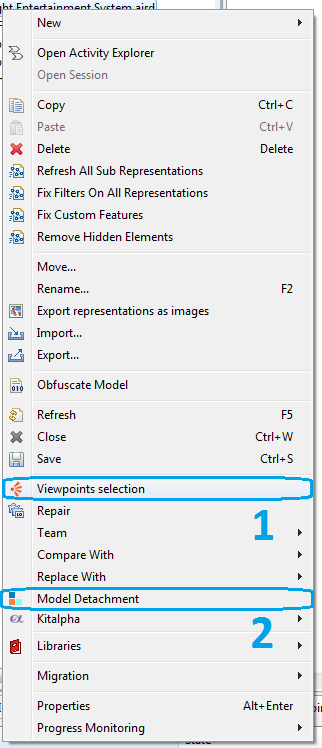
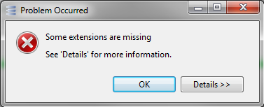
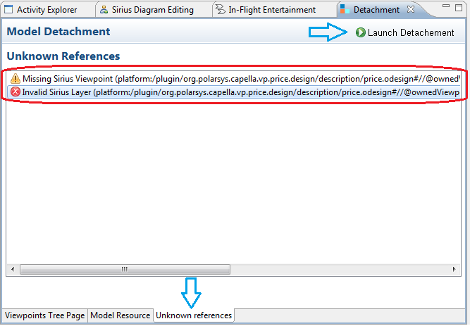
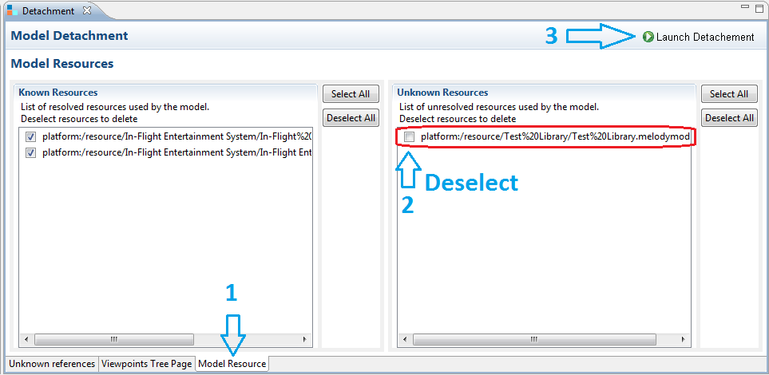

How to Detach Viewpoints from Capella Project?
Capella enforces the presence of all the Viewpoints used by a project. Thus it is mandatory to install all these Viewpoints in Capella in order to migrate or to open a project.
When all the Viewpoints previously used by the project are installed in the Capella target version, the migration will work as expected. In this scenario, the Detachment tool is not needed.
If the Viewpoints are not available nor installed in the Capella target version, a preparation of the project is needed before the migration will be possible.
Two cases can be faced.
|

|
It’s highly recommended to manually backup you
r project before using the tool.
|
The Viewpoints are Available and Installed in the Source Version
In this case, it’s recommended to :
- Open the project in the Capella source version of the project.
- Deselect all the unavailable viewpoints of the target version, by using the “Viewpoint Selection” contextual menu.
- Save the project.
- Uninstall the Viewpoints from the Capella installation.
- Launch the Detachment tool by using the “Viewpoint Detachment” contextual menu.

Fig. Launching Viewpoint detachment wizard
The viewpoints are not available and installed in the source version
In this case, while the openning of the project the following Pop-up windows will appear:

- Once you clicked on "
OK " you can directly launch the Detachment tool by using the “Model Detachment” contextual menu.
Remark: The “Model Detachment” contextual menu is only available when your project is closed .
- The Detachment tool will analyse the project model and list all unknown elements (Viewpoints) and unresolved resources (Libraries).
- If some unknown elements are detected, they will be listed in the
Unknown references menu and you could use the “Launch Detachment” button. This action will remove all the unknown elements from the project.

- If some unresolved resources are detected, they will be listed in the
Model resource/Unknown resources menu and you could use the “Launch Detachment” button. This action will remove all the wanted unresolved resources from the project by
deselecting them .
